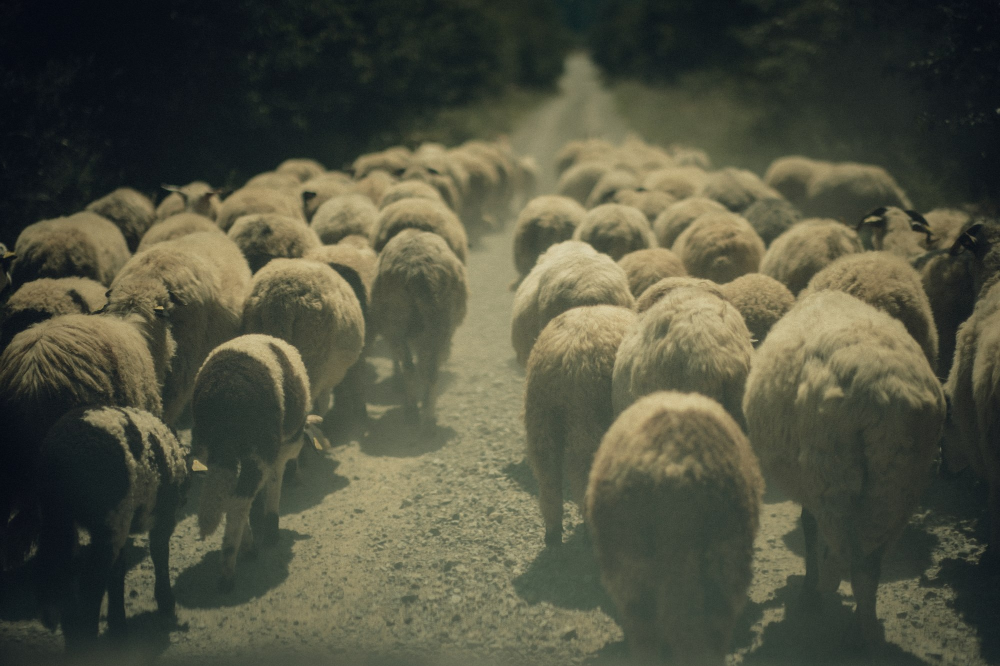
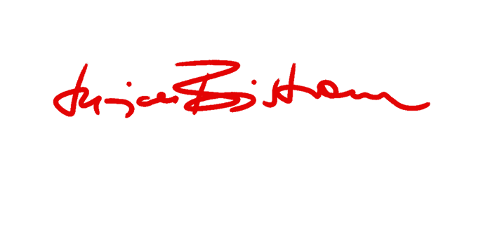
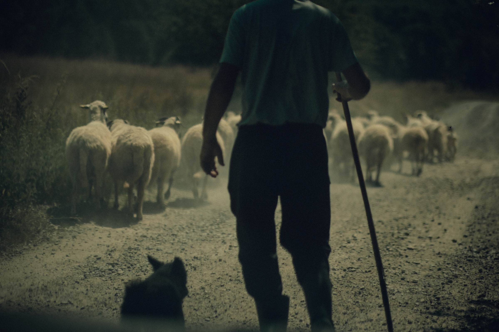
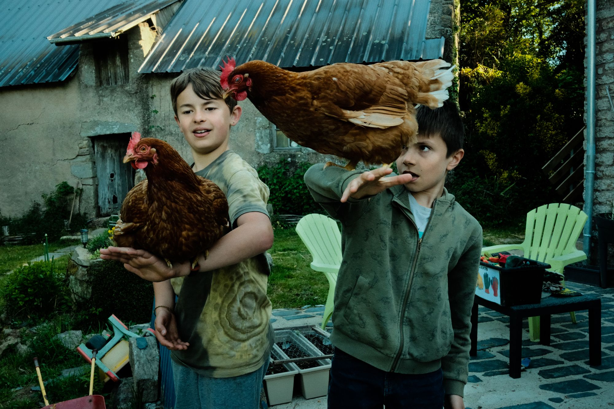
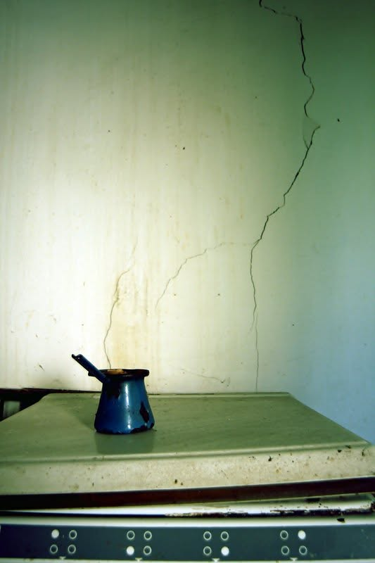

On the Road
A documentary project about movement, migration and everyday life across rural Romania.


Based in Brittany, France
Through long-term documentary projects, I explore everyday life, community and the quiet transformations of places between Romania and France.

A documentary project about movement, migration and everyday life across rural Romania.

A long-term documentary project about a community gathering around a seasonal guinguette.

A personal project about memory, family and the disappearance of a place.